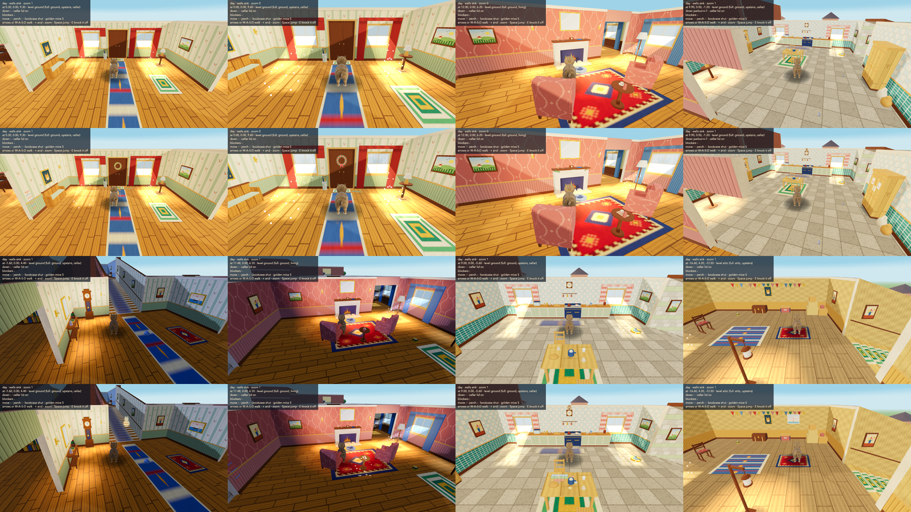

Rows 1 and 3: main. Rows 2 and 4: this branch. Same shots, same play camera (page: verify-oldhouse-beauty.html via scripts/record-page.mjs; params now=DATE and surprise=box|cuckoo|ghost).
Top pair (left to right): 1. Hall door, autumn (wreath of leaves, leaves blown in, boots and muddy prints; the old shot has a bare door). 2. Hall windows, January (holly wreath and bow, frost creeping in from the pane edges). 3. Parlour mantel, January (a garland swagged along it with twinkling lights). 4. Kitchen, autumn (half-finished jigsaw on the table, drawings pinned to the pantry door, a cuckoo-clock gable over the wall clock).
Bottom pair: 5. The big stair at night with the old house's ghost cat sitting on it (a rare moment). 6. The parlour, the music box on the side table playing by itself and glowing. 7. The kitchen's cuckoo peeking out of its little door. 8. The attic's lighthouse travel poster.

Honest read: this is a detail pass seen at the play camera, so the changes are small on a sheet. The door wreath, the jigsaw, the poster and the cuckoo gable are readable; the ghost cat, the frost and the music box glow are subtle at this size (they read better a step closer). The seasonal tone and the open-window curtain breathing are mild.